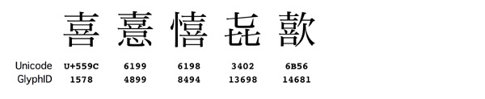
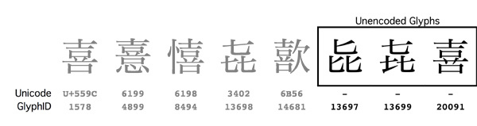
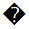
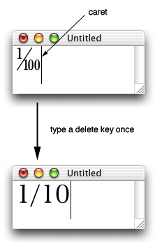
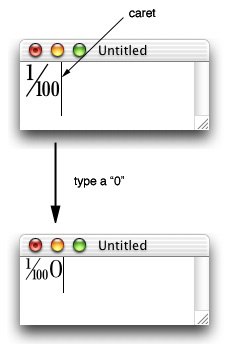

|
IntroductionThe Glyph Access Protocol allows application and input method developers to support unencoded glyphs. In the context of this document, an unencoded glyph is a glyph contained in a font, yet not defined in the Unicode 3.2 standard. In other words, the glyph cannot be accessed by standard Unicode APIs and there is no entry for the glyph in the font's Unicode mapping table. Many fonts in Mac OS X contain unencoded glyphs. The Japanese font Hiragino Mincho Pro W3, for example, contains over 7,000 such glyphs. Figure 1 illustrates 5 different variations of the Kanji "Ki". The 5 most common variations are defined in the Unicode 3.2 standard as U+559C, U+6199, U+6198, U+3402 and U+6B56. Figure 1: Variants of the Kanji \"Ki\" defined in Unicode.  In reality, the Hiragino fonts in Mac OS X contain not 5, but 8 variations of the Kanji "Ki". As illustrated in Figure 2, the first 5 characters are defined in Unicode. However, the remaining 3 glyphs are not defined in Unicode and can only be referenced by their Glyph IDs. Figure 2: All existing variants of the Kanji \"Ki\".  The Glyph Access Protocol allows developers to accomplish the following tasks:
The Glyph Access Protocol does not provide the following services:
Representing GlyphsIn order to support unencoded glyphs, there needs to be a standard way to specify glyphs by their glyph ID. The Glyph Access Protocol uses styled text to specify glyphs. Applications and input methods support unencoded glyphs by supporting an additional glyph style. In the Glyph Access Protocol, each glyph is represented by a base Unicode sequence and a glyph attribute modifier. Glyph attributes must never overlap each other in a text run. The base Unicode sequence is an array of Unicode characters that best describe the glyph. The base Unicode sequence defines the behavior of the text in operations such as editing and searching. The base Unicode sequence also defines fallback behavior for the text when the glyph attribute is lost or when the data is transfered to applications that do not support glyph attributes. In cases where the Unicode standard does not define an appropriate base sequence, the character  (U+FFFD "REPLACEMENT CHARACTER") is used as the base Unicode sequence. The glyph attribute specifies the actual glyph with which the base Unicode sequence is to be displayed. The glyph is identified by a font and a CID or GID. The glyph attribute data structure Text Services Manager ProtocolInput methods send glyphs to applications using the optional When your application receives a Carbon event with a kEventTextInputUpdateActiveInputArea kEventTextInputUnicodeForKeyEvent kEventTextInputGetSelectedText kEventTextInputUnicodeText The TextServices.h struct TSMGlyphInfoArray {
ItemCount numGlyphInfo; // UInt32
TSMGlyphInfo glyphInfo[];
};
struct TSMGlyphInfo {
CFRange range; // UTF16 offsets (two 32-bit integers)
ATSFontRef fontRef;
UInt16 collection; // Glyph collection
UInt16 glyphID; // GID (if collection is zero) or CID
};
enum {
kGlyphCollectionGID = 0; // GlyphID is a glyph ID
kGlyphCollectionAdobeCNS1 = 1;
kGlyphCollectionAdobeGB1 = 2;
kGlyphCollectionAdobeJapan1 = 3;
kGlyphCollectionAdobeJapan2 = 4;
kGlyphCollectionAdobeKorea1 = 5;
kGlyphCollectionUnspecified = 0xFF; // Unspecified
// glyphID is a CID
};
When Input method developers should use this attribute carefully since specifying fonts in input streams can lead to a confusing user interface. This attribute should be used only in cases where it is absolutely necessary. Some valid examples include entering unencoded glyphs and specifying the display font for characters in the private use area. Once an application receives text from an input method, it is free to convert the text to its internal representations. However, the data must be converted back to the same The AAT features are described at http://developer.apple.com/fonts/.
Enabling Glyph Input for TSM DocumentsApplications that support input of unencoded glyphs must notify the Text Service Manager and input methods by setting the enum { kTSMDocumentPropertySupportGlyphInfo = 'dpgi' };
extern OSStatus TSMSetDocumentProperty(
TSMDocumentID docID,
OSType propertyTag,
UInt32 propertySize,
void * propertyData);
extern OSStatus TSMGetDocumentProperty(
TSMDocumentID docID,
OSType propertyTag,
UInt32 bufferSize,
UInt32 * actualSize,
void * propertyBuffer);
Input methods must examine the Note: Kotoeri and the Character Palette in Mac OS X 10.2 ignore the ATSUI and Unencoded GlyphsUnencoded glyphs are represented in ATSUI in a similar manner to the Text Services Manager protocol. Each When GlyphInfo. When GlyphInfo. enum { kATSUGlyphSelectorTag = 287L }; // type ATSUGlyphSelector
enum { kATSUFontTag = 261L }; // type ATSUFontID
struct ATSUGlyphSelector { // 32bit selector
UInt16 collection; // kGlyphCollectionXXX enum
UInt16 glyphID; // GID (when collection==0) or CID
};
ATSUI is described at http://developer.apple.com/documentation/Carbon/text/ATSUI/atsui.html Cocoa and Unencoded GlyphsGlyph Access support in Cocoa is described below: NSGlyphInfo: NSTextView provides the following methods to enable entry of unencoded glyphs in text. For details on each method, see the related,documenttation. - (BOOL)acceptsGlyphInfo; - (void)setAcceptsGlyphInfo:(BOOL)flag; The TextEdit application in Mac OS X 10.2 and later supports the Glyph Access Protocol. Using TextEdit you can input, copy, paste and save unencoded glyphs. Scrap TypeThe standard ATSUI representation is used to exchange text via the clipboard. "utxt" should have the same base character sequence as the TSM protocol. "ustl" will have the ATSUI attributes described above. Guidelines for Editing Unencoded GlyphsIn general, the behavior of text with a glyph attribute is identical to the behavior of the base Unicode sequence minus the glyph attribute. When any part of the base Unicode sequence is modified, the glyph attribute should be removed. For example, say you have the special glyph "1/100" (one-hundredth or CID position 9824) with the base Unicode sequence "1" (one), "/" (slash), "1" (one), "0" (zero), "0" (zero). If you place the caret at the end of the sequence and press the delete key once, the base Unicode sequence will become "1" (one), "/" (slash), "1" (one), "0" (zero). As soon as the base Unicode sequence becomes "1/10", the sequence should no longer should be displayed with the glyph "1/100" (one-hundredth). The same rule applies when you modify the contents of the base Unicode sequence. For example, when "1/100" becomes "1/200". Figure 3: Editing behavior and the glyph attribute words.  Unlike ordinary styles, a glyph attribute must never expand its range when text is inserted after the base Unicode sequence. For example, if you type a "0" (zero) after the glyph "1/100" (one-hundredth), the text should by displayed as the glyph "1/100" (one-hundredth) followed by a "0" (zero). Figure 4: Editing behavior and the glyph attribute words.  When the user attempts to change the font of a glyph to a font that is inconsistent with the glyph attribute, your application can choose to notify the user of the inconsistency or simply ignore the glyph attribute when rendering the text. SummaryThe fonts included in Mac OS X contain thousands of glyphs that are inaccessible using standard Unicode APIs. The Glyph Access Protocol defines a standard mechanism to access and exchange these unencoded glyphs with input methods and other applications. ReferencesText Services Managerhttp://developer.apple.com/documentation/Carbon/text/TextServicesManager/textservicesmgr.html Apple Type Services for Unicode Imaging (ATSUI)http://developer.apple.com/documentation/Carbon/text/ATSUI/atsui.html Carbon Event Managerhttp://developer.apple.com/documentation/Carbon/oss/CarbonEventManager/carboneventmanager.html Fonts and Toolshttp://developer.apple.com/fonts/ Adobe-Japan Character CollectionsAdobe-Japan1-4 Character Collection for CID-Keyed Fonts (PDF) Adobe-Japan1-5 Character Collection for CID-Keyed Fonts (PDF) Document Revision History
Posted: 2003-05-06 |
|